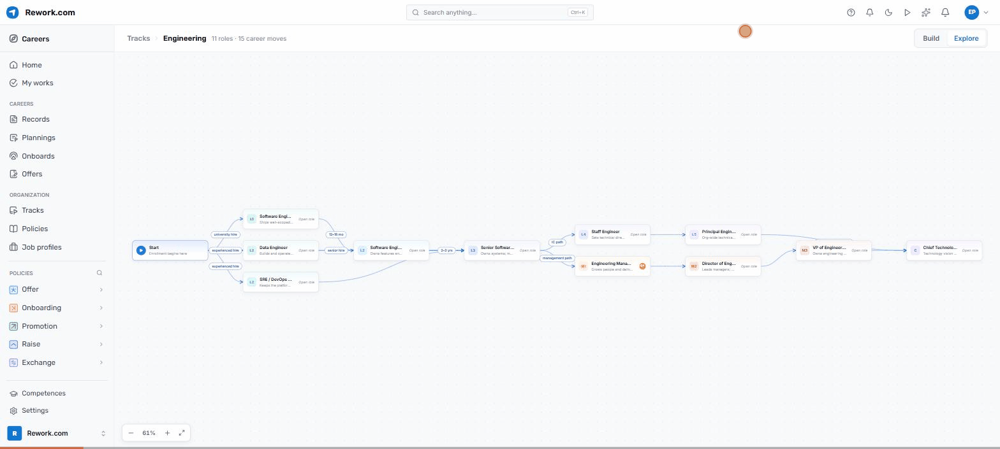
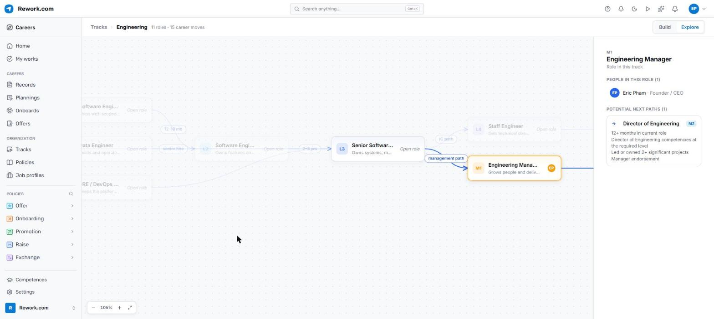
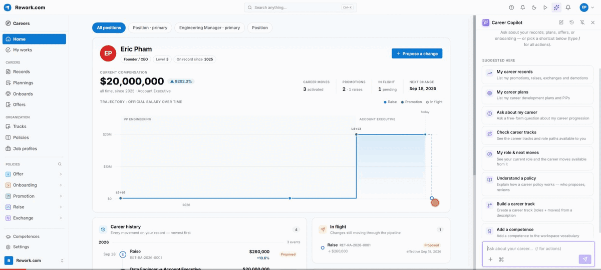
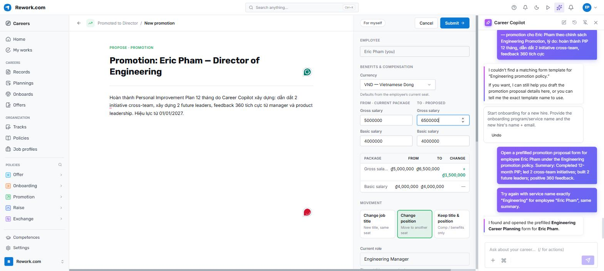
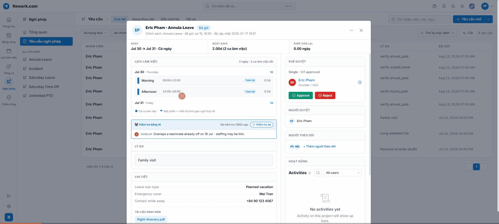
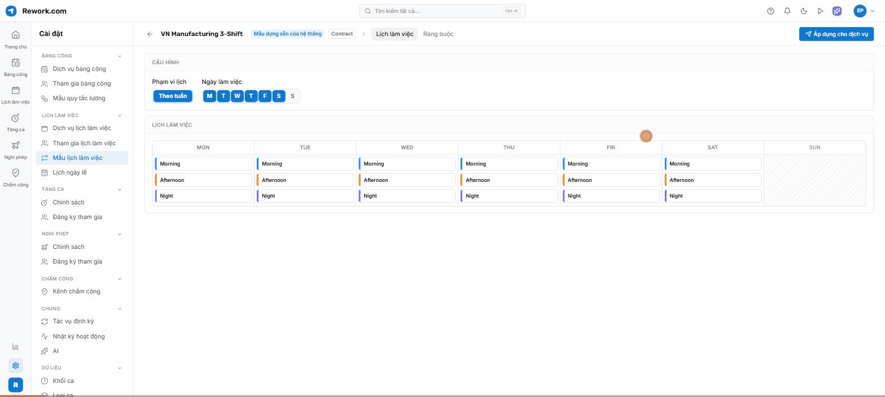
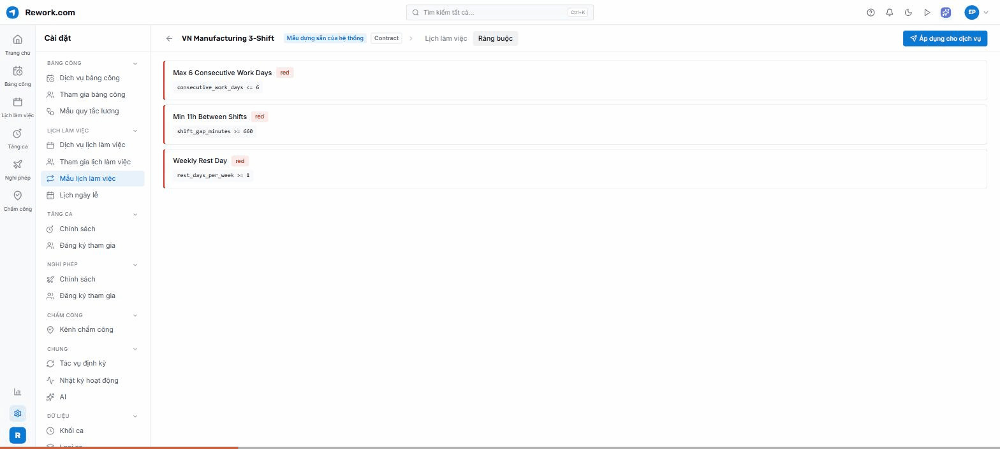
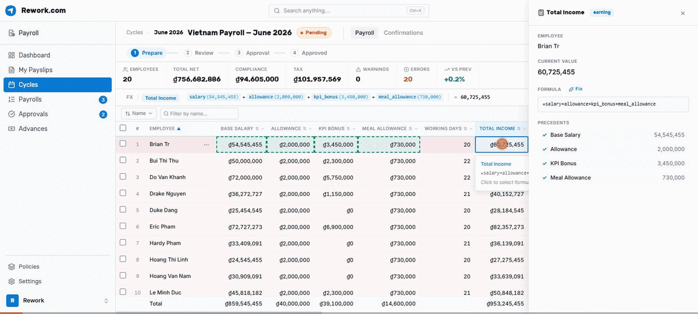
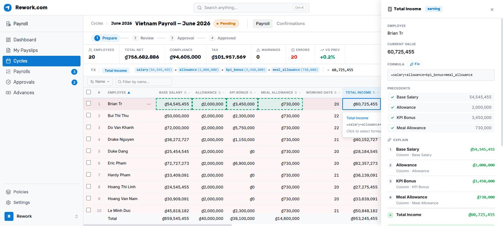
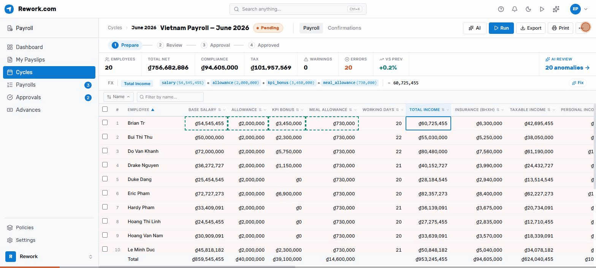

Bộ HRM
cho kỷ nguyên AI
Pipeline ứng viên và phỏng vấn có cấu trúc — chọn đúng người cho đúng vị trí đã định nghĩa sẵn.
Thư mời theo chính sách, hội nhập từng bước — hồ sơ ứng viên chảy thẳng sang hồ sơ nhân viên.
Ca kíp, chấm công, nghỉ phép đổ thẳng vào kỳ lương — đúng từng đồng, đúng hạn.
Lộ trình, thăng chức, hồ sơ cập nhật suốt vòng đời — rồi vòng lại: vị trí mới mở ra, quay về chặng Tuyển dụng.

Một vị trí trong sơ đồ — JD · KPI · Quản lý: Jane Truong











Vai 1 · Trợ lý công việc
Ở từng chặng của hành trình, Agent đứng cạnh mỗi người: tư vấn lộ trình và dựng PIP (Sự nghiệp) · kiểm tra ngữ cảnh đơn nghỉ, soát đổi ca (Thời gian) · giải trình lương tới từng biến, quét bất thường (Lương).
Vai 2 · Đồng nghiệp trong sơ đồ
Vì tổ chức mô hình hoá theo vị trí, Agent cũng đảm nhận một vị trí như mọi thành viên: có JD, có KPI, có quản lý trực tiếp — xuất hiện ngay trên sơ đồ tổ chức (Tổ chức).